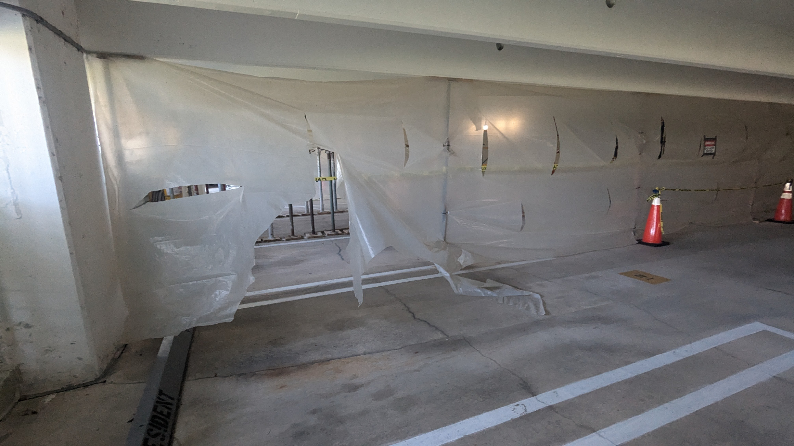
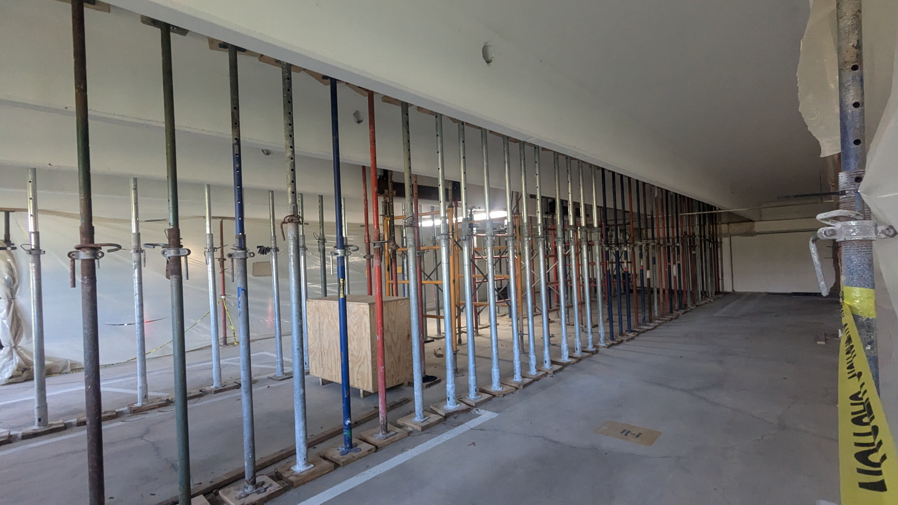
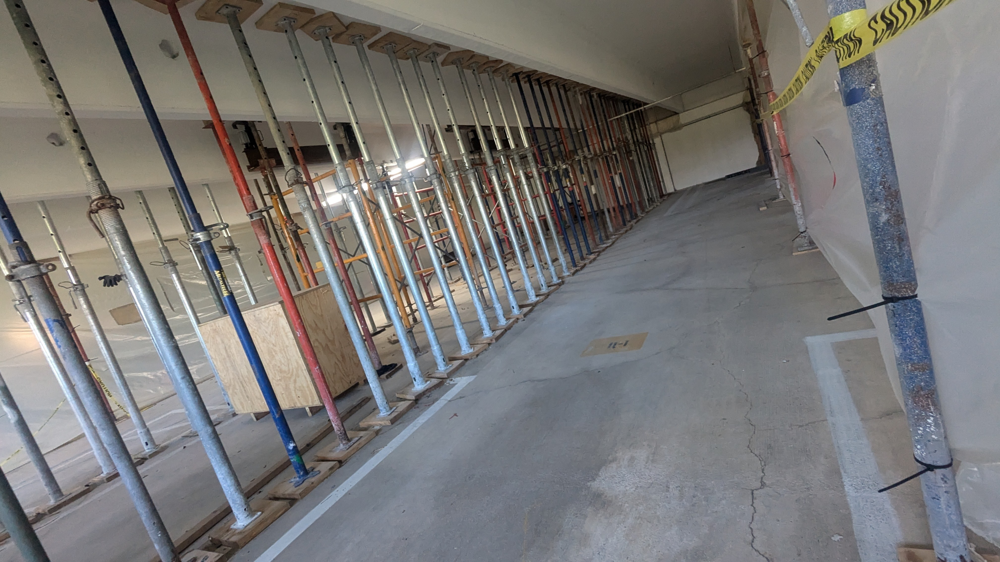
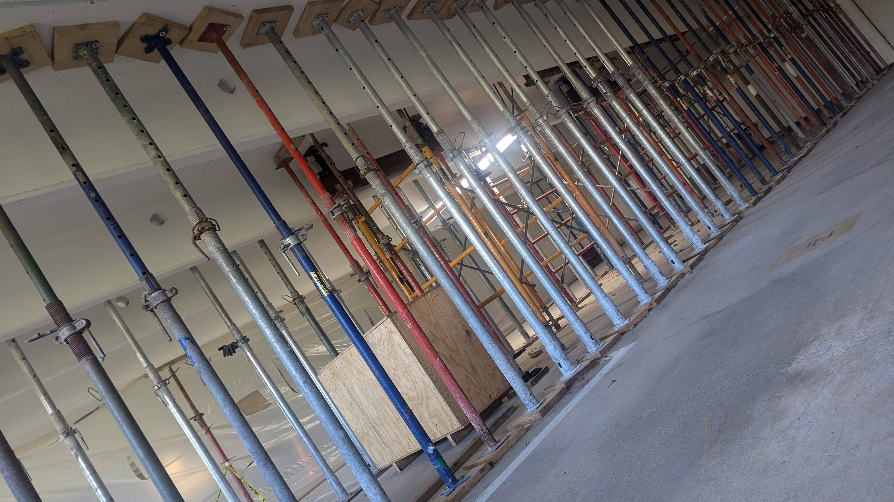

Parking Garage Structural Repair Project (2025)
This page summarizes the documented contract amount, engineering inspection, observed work timeline, and project disruption associated with the 2025 parking garage repair work.

Key Project Issues
These factors may lead residents to review whether the documented cost, duration, and disruption were proportionate to the scope of work described in the project records.
Project Overview
This page reviews the garage repair project using engineering documentation, contractor records, site observations, and photographs of the work area. The goal is to help residents understand the documented cost, the visible scope of work, the timeline of the project, and the impact on parking access.
The page does not make legal accusations. It presents documented records and resident observations so residents can evaluate the project for themselves.
Documented Financial Exposure
| Component | Amount |
|---|---|
| Engineering Inspection | $4,800 |
| Garage Repair Contract | $60,538 |
| Total Documented Cost | $65,338 |
Based on the latest project documentation reviewed, the currently supported repair contract amount appears to be $60,538, with a separate engineering inspection cost of $4,800, for a total documented project cost of $65,338.
Earlier records included multiple proposal figures. This page uses the most current contract amount supported by the latest documentation reviewed.
What the $60,538 Contract Covers
| Item | Amount |
|---|---|
| General Conditions / Mobilization | $4,000 |
| Labor | $21,080 |
| Equipment | $35,458 |
| Total Contract Price | $60,538 |
According to the latest contractor agreement, the repair contract amount is allocated primarily to labor and equipment, with a smaller amount attributed to general project conditions.
This breakdown may help residents evaluate how the contract amount relates to the visible scope of work and project duration.
Documented Scope of Work
- structural engineering inspection
- review of the affected garage area
- temporary structural shoring
- lifting / jacking of one slab location
- structural support / stabilization work
- related repair activity in a localized garage section
The latest contract appears to cover limited jacking of one garage double-tee slab at one location in the parking garage.
The documented project scope appears localized rather than building-wide, which may be relevant when residents evaluate the overall project cost and duration.
Documented vs Observed Timeline
Documented Timeline
| Date | Documented Event |
|---|---|
| Jan 23, 2025 | Engineering inspection proposal issued |
| Apr 4, 2025 | Contractor proposal issued |
| 2025 | Repair-related activity documented |
Expected duration based on contract language: ~60 days
Observed Timeline
| Observation | Approximate Timing |
|---|---|
| Temporary support bars first visible | Early March 2025 |
| Bars remained in place until | Mid-December 2025 |
| Observed visible active work | Spread over several weeks; roughly equal to about 1 to 1.5 weeks of full-time work |
| Parking disruption | Extended across much of 2025 |
Resident observation:
Temporary support bars were visible in the garage from approximately early March 2025 until mid-December 2025. Based on direct observation, visible active contractor work appeared to be spread over several weeks, but not on a full-time basis, and it seemed roughly equivalent to about 1 to 1.5 weeks of full-time work. A contractor log report could help clarify the exact work pattern.
The observed duration of parking disruption appears much longer than the expected project duration described in the contract materials. Residents may wish to review whether the project was scheduled and managed efficiently relative to the documented scope.
| Metric | Value |
|---|---|
| Expected Duration | ~60 days |
| Observed Site Impact | ~9 months |
| Observed Active Work | Several weeks of intermittent activity; roughly equal to about 1 to 1.5 weeks full-time |
| Total Documented Cost | $65,338 |
Permit Visibility
Based on resident observation, no construction permit was visibly posted in the garage work area during the period the repair site was active.
Residents may wish to verify:
- whether permits were issued
- whether they were properly displayed
- whether the work proceeded in accordance with local permitting requirements
Project Work Area Documentation
The photographs below show the garage work area, temporary shoring, and the localized section associated with the repair activity. These images help residents evaluate the visible scale of the work area relative to the documented project cost and the duration of parking disruption.




Project Video Documentation
The video below provides additional visual context regarding the work area and temporary structural supports present during the project period.
If the embedded video does not load, open it directly on YouTube.
Project Summary
| Item | Description |
|---|---|
| Work Area | Localized garage slab section |
| Engineering Inspection | $4,800 |
| Repair Contract | $60,538 |
| Total Documented Cost | $65,338 |
| Expected Duration | ~60 days |
| Observed Bars in Place | ~9 months |
| Observed Active Work | Several weeks of intermittent activity, roughly equal to about 1 to 1.5 weeks full-time (resident observation) |
The documented cost, localized scope, extended disruption period, and limited observed work activity may lead residents to review whether the project was handled efficiently and proportionately.
Questions Residents May Consider
- Was the documented project cost proportionate to the visible scope of work?
- If the contract anticipated a shorter duration, why did the disruption appear to continue for much longer?
- Were parking restrictions minimized as much as possible during the project?
- Were contractor scheduling and engineering oversight coordinated efficiently?
- Were permits issued and visibly posted during the project period?
- Were residents given clear and consistent information regarding scope, cost, and duration?
These questions are presented for informational and transparency purposes based on documented records and resident observations.